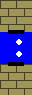

In het kader van het project voor het vak Functioneel Programmeren, ontwikkelden we de taal 🤖. Deze taal kan gebruikt worden om een fysieke mBot of een virtuele mBot in de simulator, die we eveneens ontwikkelden, aan te sturen. Geïnspireerd door de overweldigende populariteit van Emoji, besloten we in de syntax veelvuldig gebruik te maken van Emoji. Dit leek ons niet alleen technisch een interessante uitdaging, het leek ons ook aangenaam om eens iets anders te schrijven dan de zoveelste if..then..else.
Een belangrijk principe bij het ontwerp van onze taal was dat 🤖-programma's er steeds elegant en ‘aaibaar’ moesten uitzien. Hiermee rekening houdend, besloten we om onze taal niet louter uit Emoji op te bouwen, maar enkel Emoji te gebruiken op plaatsen waar onze taal er leesbaarder door werd. Zo kozen we bijvoorbeeld voor 📠in plaats van een functie getDistance(), maar kozen we niet voor â— in de plaats van / aangezien deze laatste substitutie de leesbaarheid niet ten goede komt. Nog steeds met dit principe in het achterhoofd, probeerden we ook de ‘clutter’ in onze taal zoveel mogelijk te beperken. Zo maken we, net zoals bv. Python, gebruik van indentatie in plaats van paren haakjes om blokken aan te duiden en worden statements gescheiden door een nieuwe lijn in plaats van een puntkomma. Aan de andere kant namen we het dubbelpunt na de conditie van een if-statement dan weer niet over, aangezien dit onnodige visuele ruis introduceerde.
Uiteraard zijn we ons ervan bewust dat we niet de eerste zijn met dit idee. Er bestaan reeds andere programmeertalen die experimenteren met Emoji. Zo gebruikt de taal 4Lang louter Emoji, maar ook Apple's Swift laat Emoji-karakters toe in namen van variabelen of klassen. We besloten om ons zo weinig mogelijk te baseren op bestaande Emoji-talen omdat het ons leuker en leerrijker leek om iets volledig vanaf nul te ontwerpen.
Los van het esthetische aspect, valt uiteraard te discussiëren over het praktisch nut van de taal. Zo bevatten de meeste toetsenborden geen Emoji-karakters. We zijn er dan ook geenszins van overtuigd dat een programmeertaal gebruik makend van Emoji effectief een goed idee is voor praktische toepassingen. Waar wel van overtuigd zijn, is das het ontwikkelen en implementeren van deze taal een erg interessante en aangename leerervaring was.
We maken gebruik van de Extended Backus-Naur form om de syntax van onze taal te beschrijven. Om dit overzichtelijk te houden, voegen we wat extra opmaak toe om duidelijk het onderscheid te maken tussen elementen in onze taal en elementen van EBNF. Zo worden niet-terminalen omkaderd en krijgen symbolen die witruimte aanduiden een blauwe achtergrond. Syntaxelementen van EBNF worden vervolgens aangeduid met een lichte kleur. Alle terminalen die de gebruiker effectief intypt (bv. haakjes of ğŸ‘), zijn tenslotte een emoji of gewoon zwart.
_StmtSeq_ := _Stmt_ { *⏎* _Stmt_ }
_Stmt_ := _Assignment_ | _While_ | _If_ | _Command_ | _Skip_
_Assignment_ := Identifier ⪠_AExp_
_While_ := 🔠_BExp_ *⇥* _StmtSeq_ *⇤*
_If_ := ❓ _BExp_ *⇥* _StmtSeq_ *⇤* { *⏎* ⁉️ _BExp_ *⇥* _StmtSeq_ *⇤* } [ *⏎* ❗️ *⇥* _StmtSeq_ *⇤* ]
_Skip_ := 💠Some text
_AExp_ := _ATerm_ { ( + | - ) _ATerm_ }
_ATerm_ := _AFactor_ { ( * | / ) _AFactor_ }
_AFactor_ := ~(~_AExp_~)~ | _Constant_ | _Sensor_ | Identifier
_Constant_ := Literal | 🌑 | 🌓 | 🌗 | 🌕
_Sensor_ := 📠| ğŸ”
_BExp_ := _BTerm_ { barbar _BTerm_ }
_BTerm_ := _BFactor_ { && _BFactor_ }
_BFactor_ := 👠| 👠| ! _BFactor_ | ~(~_BExp_~)~ | _BRel_
_BRel_ := _AExp_ < _AExp_ | _AExp_ == _AExp_ | _AExp_ > _AExp_
_Command_ := 💨 _Direction_ | 😴 _Duration_ | 🚨 _Flank_ _AExp_ _AExp_ _AExp_
_Direction_ := ⬇️ | ➡️ | ⬅️ | ⬆️
_Duration_ := 🕑 | 🕔 | 🕧 | 🕖 | 🕙 | _AExp_
_Flank_ := 👈 | 👉
In bovenstaande definities duidt Identifier de naam van een variabele aan. Variabelenamen beginnen steeds met een letter gevolgd door nul of meerdere alfanumerieke karakters. Een Literal is een geheel getal in het decimale talstelsel. Some text duidt vervolgens één regel tekst met eender welke karakters, waaronder ook witruimte, aan.
Een programma in 🤖 is een StmtSeq, m.a.w. een opeenvolging van statements die elk op een eigen lijn staan. We maken dus geen gebruik van puntkomma's om statements te scheiden, zoals dat vaak gebeurt, maar wel van één of meerdere newline-karakters. Ook worden blokken niet aangeduid door ze te omringen met overeenkomstige haakjes, maar wel door de statements die deel uitmaken van het blok meer te laten inspringen. Verder zijn de statements die we onderscheiden erg gelijkaardig aan diegene die je vindt in traditionele imperatieve programmeertalen. De vijf types statements worden hieronder individueel toegelicht.
Dit is een toekenning. De waarde van de aritmetische expressie rechts van het toekenningsteken (⏪) wordt opgeslagen onder de naam Identifier, die links die van het toekenningsteken staat.
Dit is een lus. De body wordt uitgevoerd zolang de booleaanse expressie die de conditie voorstelt naar 👍 evalueert.
Dit is een conditional. De structuur is hetzelfde als bij een traditioneel if/else-if/else-statement. Eerst wordt de booleaanse expressie naast ❓ geëvalueerd. Als deze naar 👠evalueert, wordt de bijhorende body uitgevoerd. Indien de conditie naar 👠evalueert, testen we de ⁉️-condities één voor één en voeren we de body uit die hoort bij de eerste die naar 👠evalueerde. Indien geen enkele conditie naar 👠evalueerde, wordt de body van ❗️-tak uitgevoerd indien deze gegeven is. Er mogen dus een nul of meerdere ⁉️-takken zijn en hoogstens één ❗️-tak.
Dit is commentaar. Alle tekst rechts van de 💠wordt genegeerd.
Dit stelt een commando voor dat naar de MBot of de simulator wordt gestuurd. Er zijn vier types commando's. De argumenten van een commando worden van elkaar gescheiden door een spatie.
Stel de motor in om in de opgegeven richting te rijden. Mogelijke richtingen zijn vooruit (⬆️), achteruit, (⬇️), naar links (⬅️) en naar rechts (➡️).
Slaap even alvorens verder te gaan met de uitvoering. Gedurende het slapen, blijft de MBot actief. Hij rijdt m.a.w. verder in de richting waarin hij reeds aan het rijden was. Als argument kan een arithmetische expressie, die het aantal te slapen milliseconden voorstelt, meegegeven worden. Een andere mogelijkheid is om gebruik te maken van één van de ingebouwde constanten om 400 ms (🕑), 800 ms (🕔), 1200 ms (🕧), 1600 ms (🕖) of 2 s (🕙) te slapen.
Laat het opgegeven lichtje branden in de opgegeven kleur. Het eerste argument duidt aan als het commando betrekking heeft op het linkse (👈) of rechtse (👉) lichtje. De volgende drie argumenten zijn aritmetische expressies die de RGB-waarde van het in te stellen kleur voorstellen. Het bereik van de RGB-waarden loopt van 0 t.e.m. 100 en waarden buiten dit interval worden geclipped.
In de bovenstaande bespreking van statements, werden de termen booleanse expressie en arithmetische expressie veelvuldig gebruikt. We leggen nu ook de semantiek van deze taalelementen precies vast.
Een arithmetische expressie is een uitdrukking die als resultaat een geheel getal oplevert.
Om de prioriteit van de bewerkingen eenduidig vast te leggen, gebruiken we een hiërarchie van taalelementen.
Een expressie bestaat uit één of meerdere termen gescheiden door een plus- of min-symbool.
Deze twee operatoren zijn links-associatief en hebben de laagste prioriteit.
Een term bestaat vervolgens uit één of meerdere factoren gescheiden door een maal- of deling-symbool, welke ook
beide links-associatief zijn maar een hogere prioriteit hebben.
Een factor tenslotte is het meest elementaire deel en kan bestaat uit een expressie omringd door haakjes, een
constante numerieke waarde, een sensor of een identifier.
Een constante is ofwel de decimale representatie van een geheel getal of één van de ingebouwde constanten - 🌑, 🌓, 🌗 en 🌕 - die respectievelijk 0, 1, 2 en 3 voorstellen. Denk aan de binaire voorstelling van deze getallen om in te zien waarom deze representatie steek houdt.
Een sensor verwijst naar de sensorwaarde van een van de ingebouwde sensoren. De afstandssensor, 📏, stelt de afstand voor tot het object voor de mBot. De waarde van deze sensor is steeds een geheel getal. De lijnsensor, ğŸ”, geeft aan welke kleur de mBot onder zich ziet. De waarde van deze sensor is steeds een waarde van 0 t.e.m. 3: 🌑 (beide zwart), 🌓 (enkel links zwart), 🌗 (enkel rechts zwart) of 🌕 (beide wit).
Een identifier verwijst vervolgens naar de waarde van een variabele. Indien er nog niet eerder geschreven werd naar de corresponderende variabele, wordt er een fout opgegooid tijdens de uitvoering.
Een booleaanse expressie is een uitdrukking die als resultaat de waarde waar (ğŸ‘) of onwaar (ğŸ‘) oplevert. Om de prioriteit van de bewerkingen ook hier eenduidig vast te leggen, gebruiken we opnieuw een hiërarchie van taalelementen. Een expressie bestaat uit één of meerdere termen gescheiden door het OR-symbool (||). Een term bestaat uit zijn beurt weer uit één of meerdere factoren gescheiden door het AND-symbool (&&). Een factor tenslotte is waar (ğŸ‘), onwaar (ğŸ‘), het omgekeerde van factor, een expressie tussen haakjes of het resultaat van een vergelijking. De mogelijke vergelijkingen zijn kleiner dan (<), gelijk aan (==) en groter dan (>).
Dit programmaatje bestaat uit één oneindige lus. In deze lus wordt eerst het linkerledje op rood (RGB-waarde 100 0 0) en het rechterledje op blauw (RGB-waarde 0 0 100) gezet. Vervolgens wachten we 400 ms en doen we het omgekeerde, m.a.w. het linkerledje op blauw zetten en het rechterledje op rood. Tenslotte wachten we opnieuw 400 ms en wordt de lus opnieuw uitgevoerd.
Het merendeel van de functionaliteit situeert zich wederom in een oneindige lus. In deze lus wordt de afstandsensor (📏) uitgelezen en vergeleken met de voorafbepaalde treshold dist. Indien de afstand tot een object groter is dan deze treshold, blijft de robot rechtdoor rijden. Indien niet, dan rijden we gedurende 800 ms achteruit en draaien we vervolgens gedurende 400 ms naar rechts vooraleer de lus opnieuw wordt uitgevoerd.
Net zoals bij de vorige twee programma's, wordt ook hier het merendeel van het werk uitgevoerd in de oneindige lus. Het programma wordt ietsje ingewikkelder doordat we merkten dat de mBot soms kortstondig de lijn kwijtraakt. Om te vermijden dat hij dan volledig de mist in gaat, houden we telkens de meest recente nuttige waarde van de lijnsensor bij in de variabele prev. Het eerste wat we doen in de lus is het uitlezen van de laatste waarde van de lijnsensor. Vervolgens controleren we als we iets met deze waarde kunnen aanvangen. Indien de waarde namelijk tweemaal wit is, hergebruiken we de laatste geldige waarde uit prev. Indien de waarde ofwel links ofwel rechts zwart is, slaan we deze waarde op. Vervolgens sturen we de motoren aan op basis van deze waarde. Concreet betekent rijden we naar links (resp. rechts) als we links (resp. rechts) zwart zien of rijden we rechtdoor indien we tweemaal zwart uitlezen.
Doordat onze taal i.p.v. paren van overeenkomstige haakjes gebruikt maakt van indentatie (de zgn. off-side rule) om
blokken aan te duiden, is de taal niet langer context-vrij.
Het parsen van een niet-contextvrije taal kan echter snel relatief ingewikkeld worden. Gelukkig bestaat er een
elegant trukje, dat onder andere door parsers voor Python wordt gebruikt, om alsnog een contextvrije taal te
bekomen.
Het trukje bestaat eruit om onze taal eerst te laten verwerken door een preprocessor die telkens een
INDENT token toevoegt als de indentatie vermeerdert en een DEDENT token als deze
vermindert.
Deze preprocessor houdt dan toestand bij, zijnde een stack van voorgaande indentatieniveaus, maar we bekomen
vervolgens een nieuwe taal die wel contextvrij is.
Deze nieuwe taal, met als enige verschil dat alle indentatie vervangen is door
INDENT/DEDENT tokens, wordt vervolgens verwerkt door de parser, die geen rekening meer
hoeft te houden met indentatie.
De communicatie tussen het programma en de simulator gebeurt met behulp van een MVar. De
MVar wrapt een World. Het World datatype bevat alle informatie over de wereld
en de robot. Beide threads werken met de MVar op dezelfde manier: eerst wordt de wereld uit de MVar
gehaald, daarna wordt een aangepaste wereld berekend en tenslotte wordt de aangepaste wereld in de MVar
gestopt.
Collision detection wordt geïmplementeerd door te kijken of er ten minste één van de acht punten aangeduid op de onderstaande figuur zich in een muur bevindt. Opmerkelijk hierbij is dat we niet enkel de hoekpunten van de robot controleren.

De nood aan de 4 extra punten wordt geïllustreerd aan de hand van de volgende 2 scenario's. In het eerste scenario wil de robot zich door een kleine ingang tussen 2 muren bewegen. Een muur en de robot zijn precies even groot dus zullen de hoekpunten van de robot precies samenvallen met de rand van de muur. We zijn dus genoodzaakt om punten die precies op de rand vallen niet te zien als collisions.
In het tweede scenario rijdt de robot tegen een muur die zich op dezelfde y-waarde bevindt als de robot. Indien we enkel de hoekpunten zouden bekijken, zouden alle punten precies samenvallen met een rand van een muur. Doordat punten net op de rand van een muur mogen vallen, zou er dus geen collision zijn. De robot zou dus in staat zijn om door de muur te rijden. We zijn dus genoodzaakt om 4 extra punten te controleren.
Hiervoor construeren we een denkbeeldig segment die loodrecht staat op het midden van de voorkant van de robot. We berekenen de intersecties van dat segment met de muren. Daarna berekenen we de afstand van elke intersectie tot het midden van de voorkant van de robot. De kleinste afstand is de waarde van de ultrasone sensor.
Hiervoor moeten we controleren of een bepaalde coördinaat zich op een segment bevindt. We staan toe dat een coördinaat zich maximaal een half vakje van het segment bevindt. Eerst berekenen we het punt X op de lijn, waartoe het segment behoort, die zich het dichtst bij de coördinaat bevindt. We moeten controleren of X zich effectief op het segment bevindt. X bevindt zich op het segment gedefineerd door punten A en B a.s.a |AX| + |XB| = |AB|. Indien X zich op het segment bevindt en de afstand tussen X en de coördinaat kleiner is dan een half vakje, dan bevindt de coördinaat zich op het segment.